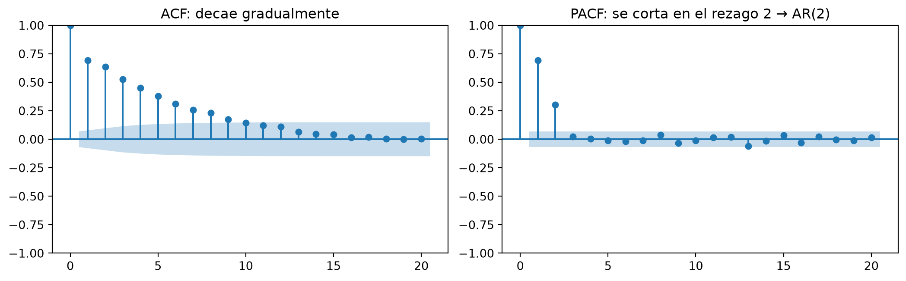
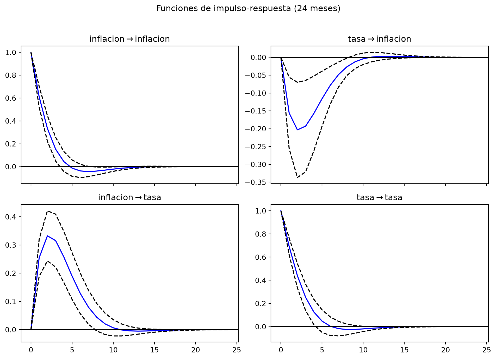

import numpy as np
import pandas as pd
import matplotlib.pyplot as plt
from statsmodels.tsa.stattools import adfuller
from statsmodels.graphics.tsaplots import plot_acf, plot_pacf
from statsmodels.tsa.arima.model import ARIMA
from statsmodels.tsa.api import VAR
rng = np.random.default_rng(42)20 Capítulo 16: Series Temporales — ARIMA y VAR
Modelar y pronosticar variables macroeconómicas y financieras
Resumen
Los modelos lineales del capítulo anterior explican una variable con otras; los modelos de series de tiempo la explican con su propio pasado. Desarrollamos el concepto de estacionariedad y cómo diagnosticarla (test ADF), la identificación de modelos con ACF/PACF, el ajuste y pronóstico con ARIMA, y los modelos VAR para sistemas de varias series macro con sus funciones de impulso-respuesta.
21 Introducción
En el Capítulo 15 explicamos el retorno de un activo con el retorno del mercado: una variable explicada por otras. Los modelos de series de tiempo cambian el ángulo: explican una variable con su propio pasado. La pregunta ya no es “¿cómo se mueve \(y\) con \(x\)?” sino “¿qué dice la historia de esta serie sobre su próximo valor?”
En finanzas y macro, esta caja de herramientas es la estándar para pronosticar inflación, actividad, tasas de interés o volatilidad, y para responder preguntas de política: si sube la tasa, ¿qué le pasa a la inflación en los próximos trimestres?
Este capítulo retoma la manipulación de series del Capítulo 6 (fechas, resampleo, retornos con Pandas) y le agrega los modelos: ARIMA para una serie, VAR para varias a la vez.
22 Estacionariedad: la condición de entrada
22.1 Por qué importa
Todo pronóstico basado en el pasado descansa en un supuesto: que las reglas del juego no cambian. Formalmente, una serie es estacionaria (en sentido débil) si su media, su varianza y sus autocovarianzas no dependen del tiempo. Si la serie tiene tendencia, o su varianza explota, el pasado ya no es una guía del futuro y los modelos que veremos dan resultados sin sentido.
El peligro concreto se llama regresión espuria: dos series con tendencia, sin ninguna relación real, muestran correlaciones altísimas y p-values espectaculares. Veámoslo — es el error más caro de la econometría aplicada:
import statsmodels.api as sm
# Dos paseos aleatorios TOTALMENTE independientes
n = 500
x = np.cumsum(rng.normal(0, 1, n))
y = np.cumsum(rng.normal(0, 1, n))
res_niveles = sm.OLS(y, sm.add_constant(x)).fit()
res_difs = sm.OLS(np.diff(y), sm.add_constant(np.diff(x))).fit()
print("Regresión de y sobre x (dos paseos aleatorios independientes):")
print(f" En NIVELES: R² = {res_niveles.rsquared:.3f}, "
f"p-value = {res_niveles.pvalues[1]:.2e} ← ¡relación 'significativa' FALSA!")
print(f" En DIFERENCIAS: R² = {res_difs.rsquared:.3f}, "
f"p-value = {res_difs.pvalues[1]:.3f} ← la verdad: no hay relación")Regresión de y sobre x (dos paseos aleatorios independientes):
En NIVELES: R² = 0.200, p-value = 5.42e-26 ← ¡relación 'significativa' FALSA!
En DIFERENCIAS: R² = 0.000, p-value = 0.829 ← la verdad: no hay relaciónLas series en niveles (los paseos) no son estacionarias y la regresión “encuentra” una relación fuerte que no existe. Las mismas series en diferencias (sus incrementos, que sí son estacionarios) revelan la verdad. Moraleja operativa que ya usamos en todo el libro sin justificarla: por eso trabajamos con retornos y no con precios.
22.2 Diagnóstico formal: el test ADF
El test de Dickey-Fuller aumentado (ADF) formaliza el diagnóstico. Su hipótesis nula es que la serie tiene una raíz unitaria (no es estacionaria, tipo paseo aleatorio); un p-value bajo permite rechazarla.
series_prueba = {
"Paseo aleatorio (precio)": np.cumsum(rng.normal(0, 1, 500)),
"Diferencias (retorno)": np.diff(np.cumsum(rng.normal(0, 1, 500))),
"AR(1) estacionario": None, # lo generamos abajo
}
# Un AR(1) con persistencia alta pero < 1: estacionario
ar1 = np.zeros(500)
for t in range(1, 500):
ar1[t] = 0.7 * ar1[t-1] + rng.normal()
series_prueba["AR(1) estacionario"] = ar1
print(f"{'Serie':<28}{'ADF stat':>10}{'p-value':>10} Veredicto")
for nombre, serie in series_prueba.items():
stat, pval = adfuller(serie)[:2]
veredicto = "estacionaria" if pval < 0.05 else "NO estacionaria"
print(f"{nombre:<28}{stat:>10.2f}{pval:>10.3f} {veredicto}")Serie ADF stat p-value Veredicto
Paseo aleatorio (precio) -2.27 0.183 NO estacionaria
Diferencias (retorno) -24.10 0.000 estacionaria
AR(1) estacionario -5.76 0.000 estacionariaRegla de trabajo: testeá antes de modelar. Si la serie no es estacionaria, diferenciala (una vez suele bastar: precios → retornos, PIB → crecimiento) y volvé a testear. El número de diferenciaciones necesarias es la “d” del ARIMA que viene ahora.
23 Modelos ARMA: la gramática de una serie estacionaria
Una serie estacionaria se modela combinando dos mecanismos:
- AR(p) — autorregresivo: el valor de hoy depende de los últimos \(p\) valores. “La inflación de este mes se parece a la de los meses anteriores” (inercia, persistencia).
\[y_t = c + \phi_1 y_{t-1} + \dots + \phi_p y_{t-p} + \varepsilon_t\]
- MA(q) — media móvil: el valor de hoy depende de los últimos \(q\) shocks. “El error de ayer todavía repercute hoy” (efectos transitorios de las sorpresas).
\[y_t = c + \varepsilon_t + \theta_1 \varepsilon_{t-1} + \dots + \theta_q \varepsilon_{t-q}\]
ARMA(p, q) combina ambos, y ARIMA(p, d, q) agrega la “I” de integrated: diferenciar la serie \(d\) veces antes de ajustar el ARMA. Así, un ARIMA(1,1,0) sobre un precio es un AR(1) sobre sus retornos.
23.1 Identificación: leer la ACF y la PACF
¿Cómo elegir \(p\) y \(q\)? Las dos herramientas clásicas:
- ACF (autocorrelación): correlación de la serie con sus propios rezagos.
- PACF (autocorrelación parcial): correlación con el rezago \(k\) descontando el efecto de los rezagos intermedios.
Los patrones de manual: un AR(p) tiene PACF que se corta en el rezago \(p\) y ACF que decae gradualmente; un MA(q) es el espejo (ACF se corta en \(q\), PACF decae).
# Generamos un AR(2) conocido y verificamos que las herramientas lo identifican
n = 800
serie_ar2 = np.zeros(n)
for t in range(2, n):
serie_ar2[t] = 0.5 * serie_ar2[t-1] + 0.3 * serie_ar2[t-2] + rng.normal()
fig, axes = plt.subplots(1, 2, figsize=(11, 3.5))
plot_acf(serie_ar2, lags=20, ax=axes[0], title="ACF: decae gradualmente")
plot_pacf(serie_ar2, lags=20, ax=axes[1], title="PACF: se corta en el rezago 2 → AR(2)")
plt.tight_layout()
plt.show()
La PACF muestra dos barras significativas y luego nada: la firma de un AR(2). En la práctica, la identificación visual se complementa con criterios de información (AIC/BIC): ajustar varios órdenes candidatos y quedarse con el que mejor balancea ajuste y parsimonia.
24 ARIMA en acción: modelar y pronosticar la inflación
Armemos el flujo completo con una serie macro simulada con la persistencia típica de la inflación mensual.
# Serie mensual de "inflación" con inercia AR(1) fuerte (phi=0.75)
n = 240 # 20 años
inflacion = np.zeros(n)
mu_inf = 2.0 / 12 # ~2% anual en mensual
for t in range(1, n):
inflacion[t] = mu_inf * 0.25 + 0.75 * inflacion[t-1] + rng.normal(0, 0.15)
fechas = pd.date_range("2006-01-01", periods=n, freq="MS")
serie = pd.Series(inflacion, index=fechas, name="inflacion_mensual")
# 1) ¿Estacionaria?
stat, pval = adfuller(serie)[:2]
print(f"ADF: stat={stat:.2f}, p-value={pval:.4f} → "
f"{'estacionaria, no hace falta diferenciar (d=0)' if pval < 0.05 else 'diferenciar'}")
# 2) Selección de orden por AIC entre algunos candidatos
candidatos = [(1,0,0), (2,0,0), (1,0,1), (0,0,2)]
aics = {orden: ARIMA(serie, order=orden).fit().aic for orden in candidatos}
mejor = min(aics, key=aics.get)
print("\nAIC por modelo candidato:")
for orden, aic in aics.items():
marca = " ← elegido" if orden == mejor else ""
print(f" ARIMA{orden}: {aic:8.1f}{marca}")
# 3) Ajuste final
modelo = ARIMA(serie, order=mejor).fit()
print(f"\nCoeficientes del ARIMA{mejor}:")
print(modelo.params.round(3))ADF: stat=-5.25, p-value=0.0000 → estacionaria, no hace falta diferenciar (d=0)
AIC por modelo candidato:
ARIMA(1, 0, 0): -236.9
ARIMA(2, 0, 0): -237.8
ARIMA(1, 0, 1): -238.1 ← elegido
ARIMA(0, 0, 2): -196.3
Coeficientes del ARIMA(1, 0, 1):
const 0.165
ar.L1 0.762
ma.L1 0.145
sigma2 0.021
dtype: float64El AIC elige el AR(1) —el proceso generador verdadero— y el coeficiente estimado ronda el 0.75 real. Ahora, el pronóstico:
horizonte = 24
pron = modelo.get_forecast(steps=horizonte)
media = pron.predicted_mean
banda = pron.conf_int(alpha=0.05)
fig, ax = plt.subplots(figsize=(10, 4.5))
ax.plot(serie.iloc[-72:], label="Inflación observada")
ax.plot(media, "r-", linewidth=2, label="Pronóstico ARIMA")
ax.fill_between(banda.index, banda.iloc[:, 0], banda.iloc[:, 1],
alpha=0.2, color="red", label="IC 95%")
ax.set_ylabel("Inflación mensual (%)")
ax.set_title("Pronóstico a 24 meses con intervalos de confianza")
ax.legend()
ax.grid(True, alpha=0.3)
plt.tight_layout()
plt.show()
Dos rasgos para leer en el gráfico, típicos de todo pronóstico ARIMA: la predicción converge a la media de largo plazo de la serie (la inercia se agota), y las bandas se abren con el horizonte hasta estabilizarse — el modelo es honesto sobre lo poco que sabe del futuro lejano.
Advertencia¿Y pronosticar retornos de acciones?
Tentador, pero el ARIMA sobre retornos accionarios suele encontrar… nada (\(p = q = 0\)): los retornos son casi impredecibles por su propio pasado (eficiencia de mercado en su forma débil). Donde los modelos de series de tiempo brillan es en variables con inercia estructural: inflación, tasas, actividad, y —muy especialmente— la volatilidad (la familia GARCH, prima hermana de ARMA aplicada a la varianza).
25 VAR: varias series que se influyen mutuamente
La macro rara vez es univariada: la inflación depende de la tasa de interés, la tasa responde a la inflación, y la actividad interactúa con ambas. El modelo VAR (Vector Autoregression) generaliza el AR a un sistema: cada variable se regresa sobre los rezagos de todas las variables.
Para dos variables y un rezago:
\[\begin{aligned} y_{1,t} &= c_1 + \phi_{11}\, y_{1,t-1} + \phi_{12}\, y_{2,t-1} + \varepsilon_{1,t} \\ y_{2,t} &= c_2 + \phi_{21}\, y_{1,t-1} + \phi_{22}\, y_{2,t-1} + \varepsilon_{2,t} \end{aligned}\]
Los coeficientes cruzados (\(\phi_{12}, \phi_{21}\)) son la novedad: capturan cómo una variable anticipa a la otra.
# Sistema simulado con estructura conocida:
# - la tasa sube cuando la inflación pasada fue alta (regla de política)
# - la inflación baja cuando la tasa pasada fue alta (efecto de la política)
n = 300
inf = np.zeros(n)
tasa = np.zeros(n)
for t in range(1, n):
inf[t] = 0.6 * inf[t-1] - 0.20 * tasa[t-1] + rng.normal(0, 0.3)
tasa[t] = 0.7 * tasa[t-1] + 0.25 * inf[t-1] + rng.normal(0, 0.2)
datos = pd.DataFrame({"inflacion": inf, "tasa": tasa},
index=pd.date_range("2001-01-01", periods=n, freq="MS"))
# Ajuste del VAR con selección automática del número de rezagos
var_modelo = VAR(datos)
seleccion = var_modelo.select_order(maxlags=8)
p_optimo = seleccion.aic
resultado = var_modelo.fit(p_optimo)
print(f"Rezagos elegidos por AIC: {p_optimo}\n")
print("Coeficientes de la ecuación de inflación:")
print(resultado.params["inflacion"].round(3))Rezagos elegidos por AIC: 1
Coeficientes de la ecuación de inflación:
const -0.018
L1.inflacion 0.611
L1.tasa -0.156
Name: inflacion, dtype: float64Los coeficientes recuperan la estructura que sembramos: la inflación depende positivamente de su pasado y negativamente de la tasa pasada. Pero la forma más útil de leer un VAR no es la tabla de coeficientes sino la…
25.1 Función de impulso-respuesta (IRF)
La IRF responde la pregunta de política: si hoy golpeo al sistema con un shock de una unidad en una variable, ¿cómo evolucionan todas las variables en los meses siguientes? Es el experimento contrafáctico que el VAR permite trazar.
irf = resultado.irf(24)
irf.plot(orth=False, figsize=(10, 7))
plt.suptitle("Funciones de impulso-respuesta (24 meses)", y=1.02)
plt.tight_layout()
plt.show()
Mirá el panel “tasa → inflacion”: un shock de tasa deprime la inflación durante varios meses, con el efecto máximo no inmediato sino rezagado — exactamente la dinámica “la política monetaria actúa con rezagos” que los bancos centrales repiten. El panel “inflacion → tasa” muestra la respuesta de política: la tasa sube tras un shock inflacionario y luego decae.
NotaLos VAR en la práctica
Los bancos centrales usan VARs (y variantes: SVAR, BVAR, FAVAR) como caballo de batalla para el análisis de política monetaria desde los trabajos de Sims (Nobel 2011). En finanzas se usan para sistemas tasa-inflación-actividad, para pronóstico macro que alimenta modelos de PPNR y stress testing (Capítulo 12), y para estudiar transmisión entre mercados.
26 Errores comunes
AdvertenciaTrampas frecuentes
- Modelar en niveles sin testear estacionariedad: la regresión espuria del inicio. ADF primero, modelo después.
- Sobrediferenciar: si la serie ya era estacionaria, diferenciarla “por las dudas” introduce un MA espurio y arruina el pronóstico. La “d” correcta es la mínima necesaria.
- Elegir p y q maximizando el ajuste dentro de la muestra: más rezagos siempre ajustan mejor in-sample; usá AIC/BIC o validación fuera de muestra (el tema del próximo capítulo).
- Leer causalidad en un VAR: que la tasa “anticipe” a la inflación (precedencia temporal, causalidad de Granger) no prueba causalidad económica; puede haber una tercera variable moviendo a ambas.
- Ignorar los residuos: un buen modelo deja residuos sin autocorrelación. Si la ACF de los residuos muestra estructura, el modelo se quedó corto.
27 Ejercicios Propuestos
ImportanteEjercicios
- Identificación: generá un MA(2) puro y verificá con ACF/PACF que la firma es la esperada (ACF cortada en 2, PACF decayendo).
- d correcta: tomá la serie de “precios” acumulando los retornos del capítulo, ajustale un ARIMA(1,1,0) y compará con ajustar ARIMA(1,0,0) a los retornos. ¿Son el mismo modelo?
- Backtest de pronóstico: dividí la serie de inflación en 80% entrenamiento / 20% prueba, pronosticá el tramo final y calculá el error cuadrático medio contra un pronóstico ingenuo (“mañana = hoy”). ¿El ARIMA le gana?
- Causalidad de Granger: usá
resultado.test_causalitypara testear si la tasa “Granger-causa” a la inflación en el VAR del capítulo, y viceversa. - VAR de tres variables: agregá al sistema una variable de “actividad” que dependa negativamente de la tasa, re-estimá el VAR y analizá las nuevas IRF.
28 Referencias
- Box, G., Jenkins, G., Reinsel, G., & Ljung, G. (2015). Time Series Analysis: Forecasting and Control. Wiley.
- Hamilton, J. (1994). Time Series Analysis. Princeton University Press.
- Sims, C. (1980). Macroeconomics and Reality. Econometrica, 48(1), 1–48.
- Granger, C., & Newbold, P. (1974). Spurious Regressions in Econometrics. Journal of Econometrics, 2(2), 111–120.